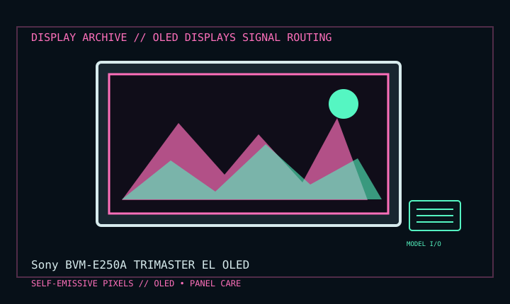

[ INDIVIDUAL COMPONENT // DISPLAY ARCHIVE ]
Sony BVM-E250A TRIMASTER EL OLED
24.5-inch professional OLED reference monitor, later TRIMASTER EL generation.

IDENTIFICATION: Match the exact model suffix, region and installed option boards to the cited manual and rear label. Do not infer electrical compatibility from connector shape.
Model-specific specifications
| Catalog class | Oled Displays |
|---|---|
| Exact product | Sony BVM-E250A TRIMASTER EL OLED |
| Era / purpose | 24.5-inch professional OLED reference monitor, later TRIMASTER EL generation. |
| Panel / image | 24.5-inch OLED; 1920 × 1080 native Full HD, 10-bit panel with 12-bit processing described in product documentation. |
| Signals / inputs | Accepts broadcast SD/HD signals; HDMI input plus four modular input-board slots. SDI/3G-SDI and other signals require the appropriate installed boards; confirm the actual board set. |
| Refresh / formats | Supports television field/frame standards through 60p or interlaced modes according to input board and signal format; it is not a generic 240 Hz PC monitor. |
| Power / mechanical | Professional rack/studio installation; operating draw and dimensions vary with board configuration. Follow exact model manual and chassis label. |
Revision, timing & host compatibility
Input-board dependent. Verify BVM-E250A versus E250, firmware and installed cards before connecting. HDMI computer modes are limited to the documented timings; SDI requires correct level/link format and external reference where specified. Do not infer signal acceptance from an empty option slot.
Before operation, compare source signal type, scan/frame timing, pinout, interface bandwidth, input-board configuration and mains/DC rating against the model-specific manual and nameplate. A listed maximum mode is not a promise of optimum image quality.
Vintage preservation & repair notes
Record hours, OLED compensation/calibration, option-board IDs, firmware and static-image history. Keep ventilation unobstructed and retain rack hardware/connector caps. Avoid static bright test patterns; use Sony procedures and qualified broadcast service for calibration or repair.
Record serial/date code, configuration, all installed interface boards, accessories, image condition, calibration state, test source and document edition. Disconnect power before external cleaning and use only the manufacturer-approved procedure; do not open CRT/LCD/OLED equipment without qualified service practice.
Manufacturer manuals & specifications
- Sony BVM-E250A / BVM-E170A Operation ManualManufacturer operating manual for OLED reference monitors and input-board configuration.
- Sony BVM-E250A Manuals & SpecificationsSony model-specific support documentation.